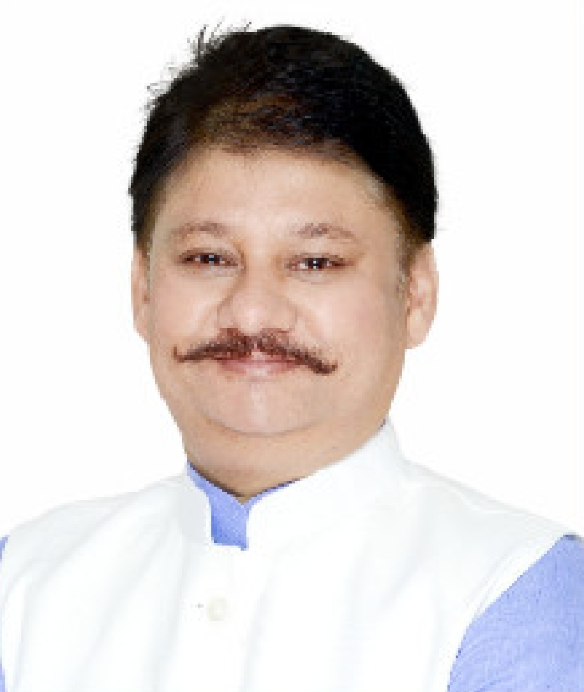
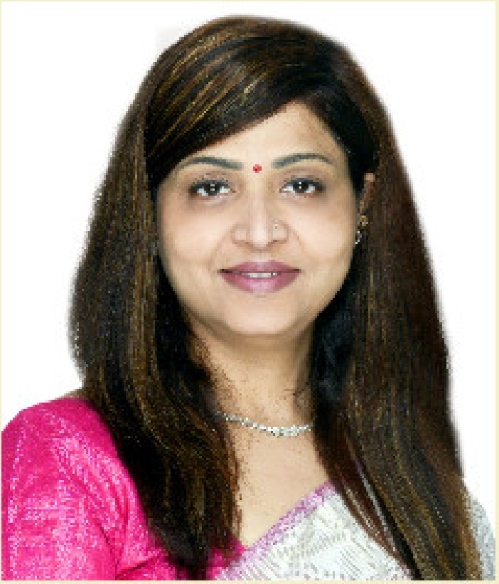
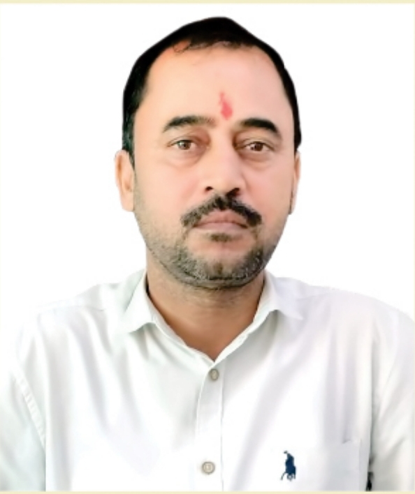

ARYAVART INSTITUTE OF TECHNOLOGY AND MANAGEMENT is known for excellence in imparting value-based, career-oriented technical and professional education. As we are living in an age of rapid development in science and technolgy,we have to ensure that students don't just pick up knowledge, skills and attitude, they have to be made ready for leadership in their respective fields....
My vision is to develop Aryavart as an Institute where the students may get knowledge based on Indian cultuure and Sanskar so that they may shape the world of tommorrow along indigenous lines; and where the students may develop an international outlook so that they may excel in any feild of their choice such as Engineering,Technology,Management, Education& Medicine under one roof..
Aryavart Institute Of Technology & Management was establish in the year 2008 mainly due to the unremitting efforts of Sri Anurag Singh,Secretary, Sanskar Foundation.The Institute is the crystallized form his innovative ideas, social sensitive, sincere concern for value-based educational and dynamic leadership...

ARYAVART INSTITUTE OF TECHNOLOGY AND MANAGEMENT strives up our future professionals, sharpen their abilities and utilies their potential. It is taken care of that they become not only successful professionals but also ethical and responsible member of society. The institute celebrates the power of knowledge, cultivates vision and encourages new ideas, besides aiming to inculate human values and build awareness about the self and society around. It is in the process of improving its standards to the level of a global technical institutions...
I invite the students endowed with inquistiveness to come forward and join AITM's pool knowledge..the proposed curriculum provides the guidelines and carves the pathway to exhibit the budding creativity, academic excellence and hidden potential of the students..
MY BEST WISHES AND CONGRATULATIONS FOR THEIR ENTHUSIATIC AND MEANINGFUL ENDEAVOR...

It is a matter of great satisfaction that India has been promoting engineering education in the country over the last few years.Engineering college in the country has been growing at 20 percent per year.According to the All India Council for technical Education, India produced 4,01,791 engineers in 2003-2004.In 2004-2005, the number of engineering graduates increased to 4,64,763. Compared to India, the United States produces only 70,000 enginnering gradutes every year..
Most institutions measure their success through the placement record of their students.We are also planning and stepping ahead to do exceedingly well on this count. However ,we intend to measure our success by the type of professionals raised here having high acedemic calibre and unblemished chracter,nutured with a strong motivatin and commitement to serve humanity; by the research done at the institute ; and the positive impact of technogies developed here on industry and society..
Finally I wish that the student ,taking admission at AITM.,world be knowledge seeker, rather than a routine job seeker.They would have keeness to work hard, aptitude for serious students, desire to develop innovative indigenous technologies having the potential to make a global impact and willingness to live up to the institute's vision and mission
Aryavart institute of Technology and Management was established in the year 2008 mainly due to the unremitting efforts of the shri Anurag singh, Secretary, Sanskar Foundation .The institute is the crytallised form of his innovative ideas, social sensitive, sincere concern for value-based education and dynamic leadership..
Institute is recognised by AICTE, New Delhi, and afficated to Board of Technical Education Uttar pradesh..The commitement of the institute is to impact knowledge par excellence, evolve result-oriented, innovative techniques in Engineering and Management...
ARYAVART INSTITUTE OF TECHNOLOGY AND MANAGEMENT envisions to develop as world reowned engineering & Management institute with welfare approach.It intends to advance and diffuse, Technical and professional knowledge to prepare human technocrats and to promote global as well as indigenous technolgy..